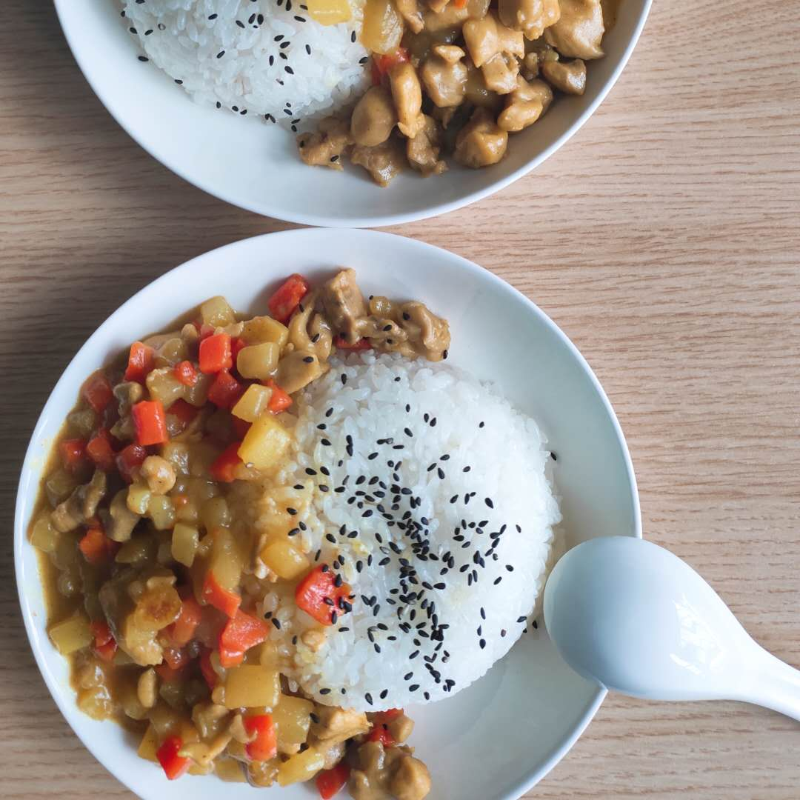
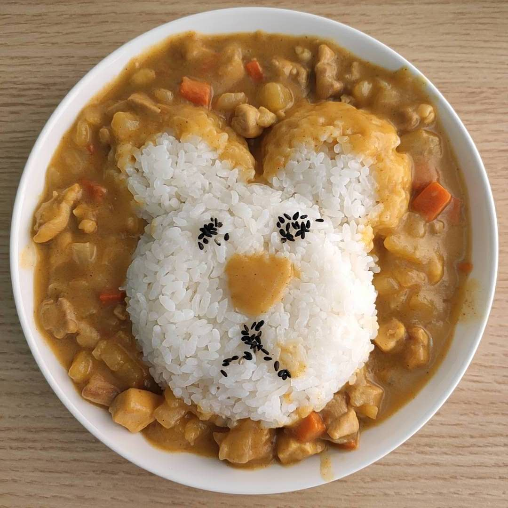
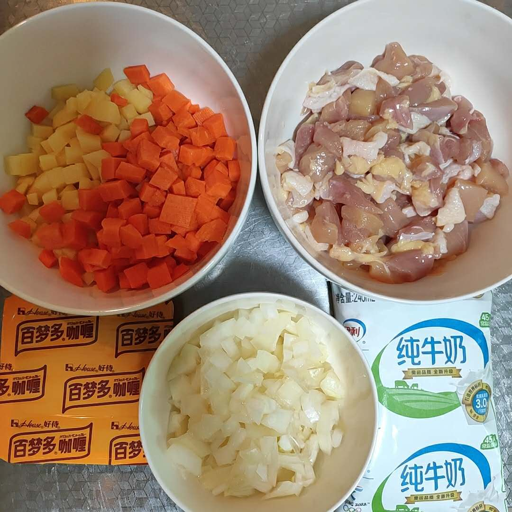
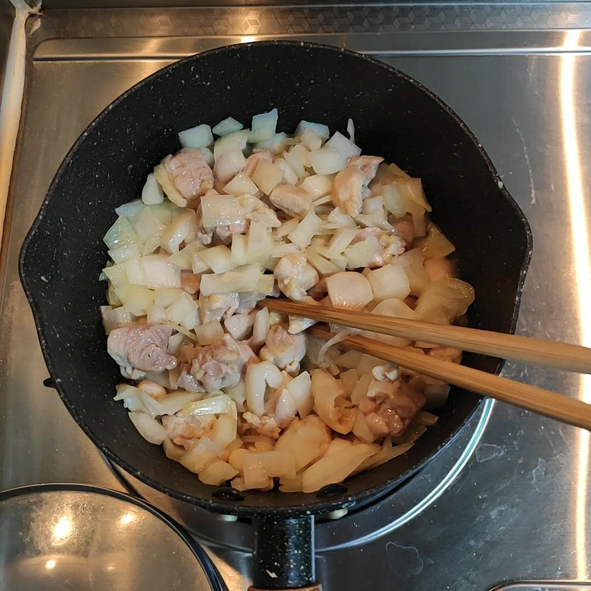

关于这道菜
咖喱这东西，碰上喜欢的人真的是最简单易做的菜了，
一份咖喱盖饭就够成为令人满足的一餐，不再需要炒第二个菜，
煮饭一口锅，煮咖喱一口锅，咖喱盖饭一只碗洗起来也方便，
对了饭直接扣锅里吃还能少洗一个碗，（人工洗碗机吐槽：但是咖喱本身很难洗啊！）
食材也都是一些易于储存的食材，
最最重要的是口味出品极为稳定，非常适合小白上手。
之前看菜谱的时候很多咖喱菜谱会额外加牛奶，
菜谱中说加牛奶会提升风味，让咖喱更浓郁。
我这次做咖喱的时候试着加了牛奶，
加了牛奶后咖喱颜色会偏白一些，
风味也更浓郁，我和阿崽都没尝出什么差别来，加不加都好吃，
所以加牛奶一定不会出事，可以试一试。
咖喱块我把附近超市能买到的都试了试，
最喜欢的还是好侍百梦多的原味咖喱（非广），
我家里一直备着一盒，想lan炖de咖zuo喱fan的时候就能直接咕嘟咕嘟。
以前盛咖喱我喜欢用盘子，好看，
但拌起来麻烦还容易拌出盘子外……
所以自家吃其实找个大号的碗装咖喱吃起来方便多了，
但如果要拍照还是拿盘子装好看，拿个碗装好饭倒扣盘子里，围一侧边或一圈咖喱都好看，饭上撒点黑芝麻就很好看。
高阶操作是捏些形状，柯基屁屁是跟B站小姐姐学的（对不起忘记是哪个小姐姐了），今天随手自己捏了只沙雕熊，太丑了就给阿崽吃了，捏造型其实用海苔剪形状比较合适，我家没有就随手撒了点芝麻，我猜用酱油上色也行。
反正都不会更好吃，只是会更好ang看gui。
心灵手巧的可以试试做熊猫吃翔（不知道的可以自行搜索），原理也是煮咖喱，捏饭团，海苔装饰饭团再摆成熊猫吃翔的样子就行啦。
 
食材清单
| 材料 | 说明 | 用量 |
|---|---|---|
| 鸡肉 | 推荐鸡腿肉，用鸡胸肉会柴一些但应该也行。猪肉也可以用来替代，做法一样。牛肉也能用来做咖喱，但是就不能和鸡肉一个做法了，得先把牛肉炖烂或者用高压锅炖咖喱才行。 | [0,吃饱]，建议一只鸡大腿 |
| 土豆 | 土豆建议一定放，咖喱的标配食材，而且土豆含淀粉，易于让咖喱粘稠 | [0,吃饱]，建议一颗小号土豆 |
| 胡萝卜 | 一般咖喱都会放，看自己爱不爱吃胡萝卜决定放多少 | [0,吃饱]，建议不超过土豆的量 |
| 洋葱 | 提升咖喱的风味，可放可不放，看个人爱好。另外我喜欢白洋葱，辛辣味没紫洋葱重，甜味更浓，颜色也好看。 | [0,适量]，不放没关系的 |
| 咖喱块 | 推荐好侍百梦多的咖喱块，不建议咖喱粉 | [0,适量]，建议好侍百梦多的两小块正好两盘份 |
| 牛奶 | 提升风味，更浓郁 | [0,适量]，建议约80ml |
| 食用油 | 炒咖喱原料用 | 适量即可 |
步骤总结
- 将蔬菜和鸡肉切丁
- 都炒一炒
- 加水加咖喱块咕嘟咕嘟到土豆胡萝卜绵软
- 想加牛奶的话加一些再咕嘟一会儿
- 出锅组装成咖喱饭
步骤详解
先将食材都处理好，
鲜鸡大腿去骨切丁，去骨的话找把厨房剪来操作，用菜刀的话容易划伤手，沿着骨头剪开后一点点扒拉下来就能获得大鸡排，然后剪成丁（这样菜刀不粘油不用洗）。
这一步可以通过直接买鸡腿肉丁来解决，我家附近盒马能买到泰森鸡腿肉丁，我买过几次，还不错。
胡萝卜、土豆、洋葱都切成小丁，我喜欢切小一些，这样煮的快。
如果切完不是立马就做的话土豆记得泡水里，不然会氧化变黑。

找口不粘锅，强烈建议煮咖喱用不粘锅，用铁锅会哭的，哭糊锅的咖喱和被霍霍的养护了好久的铁锅。
下少许油先把鸡腿肉丁炒到变色，下洋葱一起炒一会儿，炒掉辛辣味。
「之所以先下洋葱主要是因为我非常不喜欢洋葱的辛辣味，不介意的直接和土豆胡萝卜一起下锅就行」

洋葱炒到个人喜欢的程度，就可以下土豆和胡萝卜，
下了后稍微炒一炒，我不喜欢放太多油，所以多炒也不容易炒出焦香味，基本直接下水炖就好啦。
水量基本恰好没过所有食材即可，咖喱块丢进去。
「单纯做咖喱盖饭的话，这时候去淘米煮饭时间正好」
后续就是将咖喱煮化，拌匀，咕嘟咕嘟小火慢慢炖到土豆和胡萝卜软绵。
记得炖的时候时不时搅拌一下，咖喱很浓稠，特容易糊底。
如果打算加牛奶的话，在咖喱基本煮好的时候倒入牛奶，
搅匀再咕嘟一小会儿就好，可以加了牛奶后去盛饭，
盛好后咖喱关火盖饭上正好。
技术总结
- 咖喱有高阶做法，会用很多原料自己调咖喱味，诸如苹果洋葱等，像我这种菜逼只会用咖喱块，所以选自己喜欢的咖喱块是口味的关键。
- 咖喱很浓稠，建议用不粘锅做，咕嘟的时候用小火咕嘟，勤搅拌。
- 单纯自己吃的话建议用大碗装而不是用盘子装，吃起来方便。